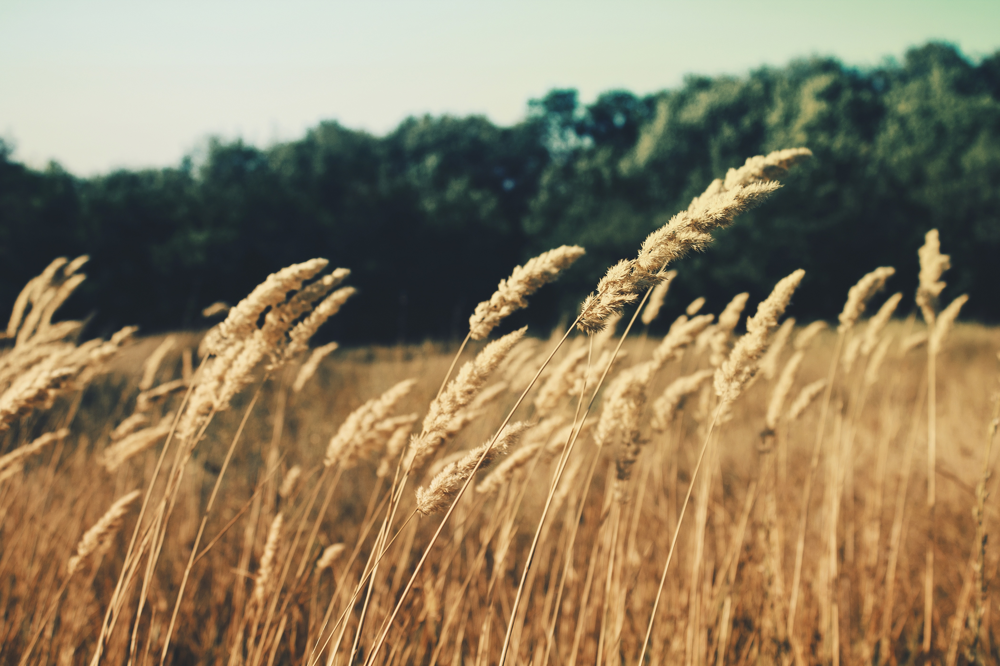

Germinaid Innovations
Agricultural solutions for a brighter future.
The Concept
The concept of Germinaid Innovations was originally established by cofounders and directors Ciara Judge and Emer Hickey after they won the 2014 Google Global Science Fair with their former classmate Sophie Healy-Thow. For their project, they used a natural soil bacteria called rhizobium to increase productivity of cereal crops such as barley. In the aftermath of their success, Ciara and Emer turned to investigate how they would commercialise their findings and decided to create Germinaid Innovations, a company under which they could brand their further research in the area, branch out into other areas of interest and eventually commercialise their findings.

The Future
Looking to the future, Germinaid Innovations has much to be excited about. Last summer was spent by our cofounders in personal development, where they prepared to move forward in this business at prestigious institutions such as MIT, LIYSF and Outbox Incubator. Short term, experimentation will be hyper localised to facilitate completion of studies, before expanding into advanced enzyme analysis, biomolecular experiments and large scale field trials in the future.